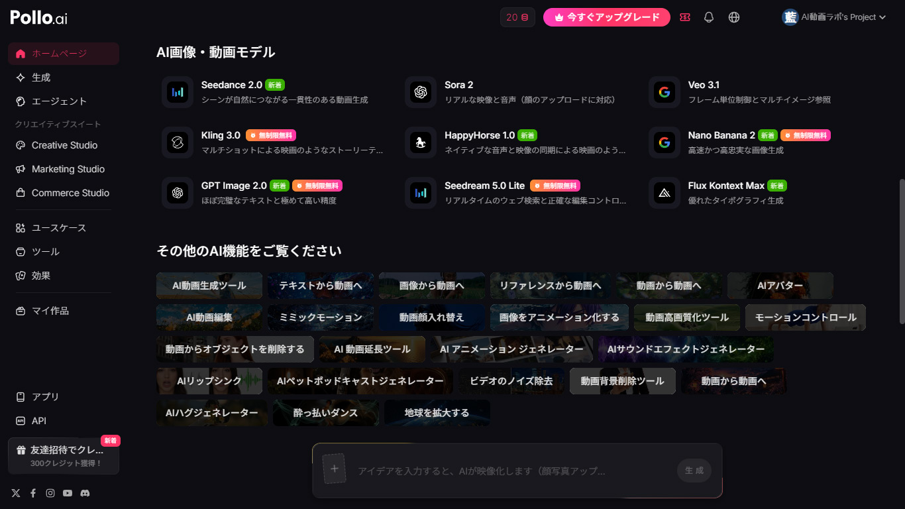
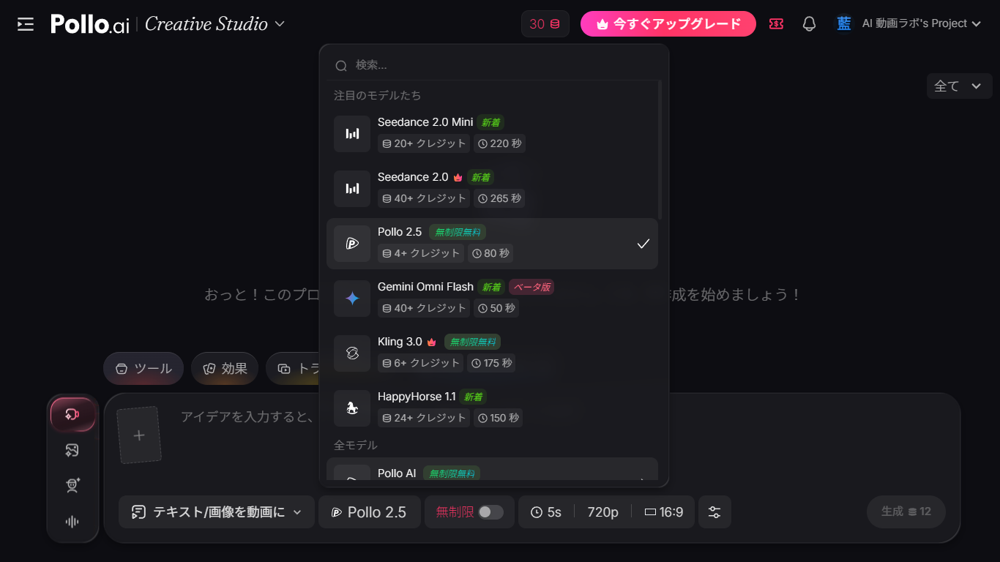
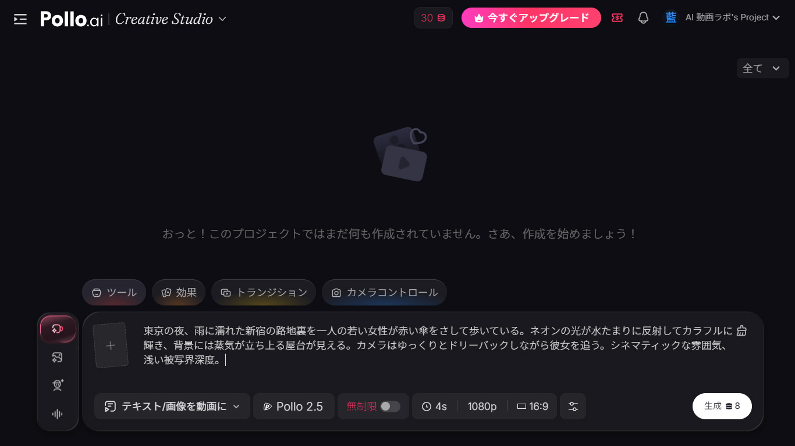
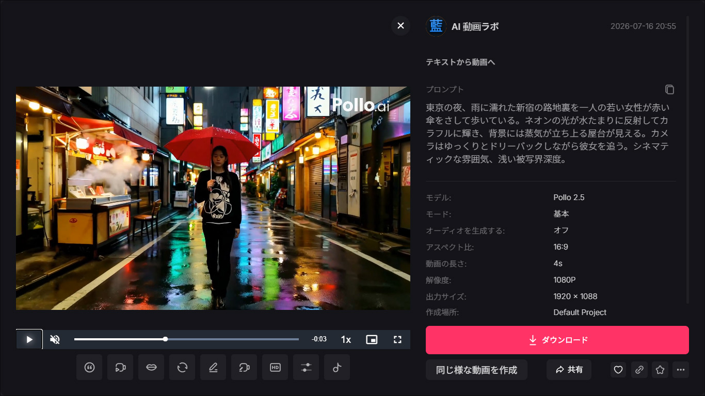
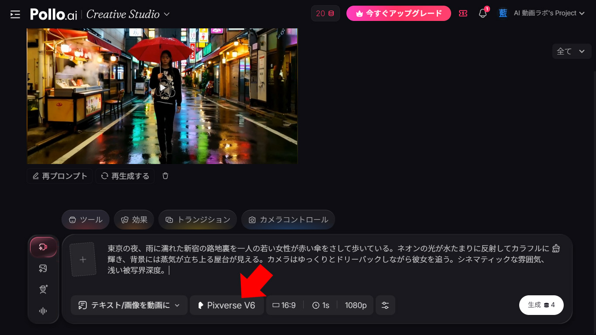
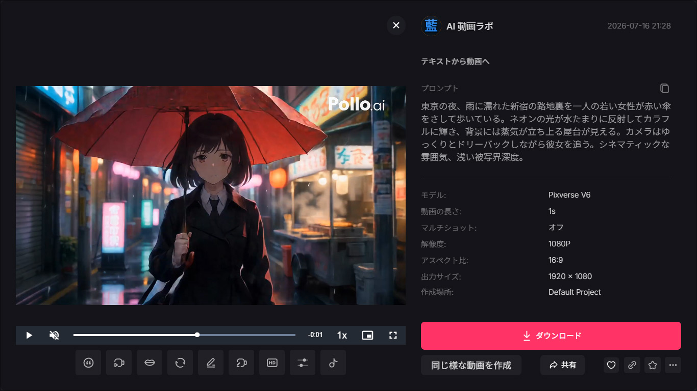
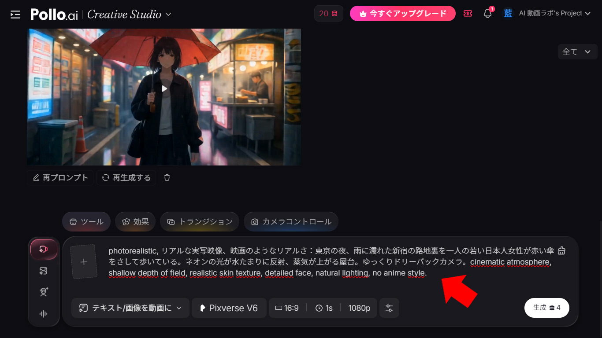
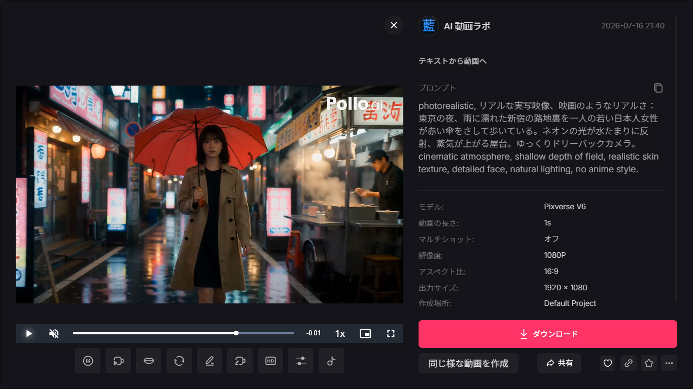

Pollo AIとは？ — 「AIモデルのアグリゲーター」という新しい発想
AI動画生成の世界は今、モデルの乱立時代に突入しています。Seedance、Veo、Sora、Kling、Hailuo、Wan AI、Vidu、Luma、Runway — どれも独自の強みがあり、どれも別々のサイトでアカウントを作り、別々に課金する必要があります。
Pollo AIは、この問題に対する一つの答えです。複数のAI動画・画像生成モデルを一つのインターフェースに集約し、同じアカウント・同じクレジットで切り替えながら使えるプラットフォーム。いわば「AI動画モデルのアグリゲーター」です。

実際にアカウントを作成して使ってみたところ、動画生成モデルだけで14ブランド・50以上のモデルバリエーションが利用可能でした。画像生成も Nano Banana 2、GPT Image 2.0、Seedream 5.0 Lite、Flux Kontext Max などが揃っています。
この記事では、Pollo AIを実際に操作し、料金体系の仕組み（と落とし穴）、生成品質、使い勝手を検証した結果を正直にお伝えします。
Creative Studioの使い方 — モデル選択から生成まで
Pollo AIのメインの作業場は「Creative Studio」です。テキストから動画、画像から動画、画像生成など、用途に応じてモードを切り替えられます。

動画生成の基本的な流れはシンプルです。テキストプロンプトを入力し、使いたいモデルを選択し、解像度・秒数・アスペクト比・オーディオの有無を設定して「生成」ボタンを押すだけ。インターフェースは日本語に対応しており、モデルの説明文も日本語で表示されます。
利用可能なモデル一覧 — 全モデルのクレジット消費量
Pollo AIの最大の特徴は、利用可能なモデルの数です。以下に、実際に確認できた動画生成モデルとその最低クレジット消費量をまとめました。

重要な注意点として、表示されているクレジット数はすべて「最低構成」での消費量です。つまり、最も低い解像度・最も短い秒数・オーディオなしの場合の数字です。実際の使用時には、設定によって大幅に変わります（詳しくは料金セクションで解説します）。
無料・低コストで使えるモデル（1〜10クレジット〜）
| モデル | 最低クレジット | 最大秒数 | 備考 |
|---|---|---|---|
| Seedance 1.0 Pro Fast | 1+ | 55秒 | 高速・低コスト |
| Wan 2.6 Flash | 1+ | 45秒 | 高速・低コスト |
| Vidu Q3 Pro | 2+ | 185秒 | |
| Vidu Q3 Turbo | 1+ | 65秒 | 高速 |
| Pollo 2.5 | 4+ | 80秒 | 無制限無料 |
| Pollo 2.0 | 4+ | 95秒 | |
| Pollo 1.6 | 5+ | 40秒 | |
| Wan 2.2 Plus | 5+ | 50秒 | |
| Pixverse V5 | 5+ | 45秒 | |
| Grok Imagine | 5+ | 325秒 | |
| Kling 3.0 | 6+ | 175秒 | 無制限無料 |
| Wan 2.7 | 8+ | 380秒 | |
| Seedance 1.5 Pro | 8+ | 100秒 | |
| Wan 2.6 | 10+ | 80秒 | |
| Pollo 1.5 | 10+ | 325秒 |
中価格帯のモデル（10〜30クレジット〜）
| モデル | 最低クレジット | 最大秒数 | 備考 |
|---|---|---|---|
| Grok Imagine Video 1.5 | 11+ | 55秒 | 新着 |
| Pollo 3.0 | 12+ | 205秒 | 新着 |
| Hailuo 2.3 Fast | 12+ | 65秒 | |
| Wan 2.5 | 12+ | 215秒 | |
| Seedance 1.0 Pro | 15+ | 70秒 | |
| Kling V3 Omni | 18+ | 110秒 | 新着 |
| HappyHorse 1.0 | 18+ | 175秒 | 新着 |
| Kling 2.1 | 20+ | 110秒 | |
| Luma Ray 2 Flash | 20+ | 45秒 | |
| Hailuo 2.3 | 20+ | 85秒 | |
| Hailuo O2 | 20+ | 75秒 | 人気 |
| Seedance 2.0 Mini | 20+ | 220秒 | 新着 |
| Wan 2.1 | 20+ | 185秒 | |
| Veo 3.1 Lite | 20+ | 60秒 | 新着 |
| Seedance 2.0 Fast | 24+ | 200秒 | 新着 |
| HappyHorse 1.1 | 24+ | 150秒 | 新着 |
| Kling 2.6 | 24+ | 125秒 | |
| Kling O1 | 24+ | 155秒 | |
| Sora 2 | 30+ | 205秒 | |
| Vidu Q1 | 30+ | 210秒 |
高価格帯のモデル（30クレジット〜）
| モデル | 最低クレジット | 最大秒数 | 備考 |
|---|---|---|---|
| Kling 3.0 Turbo | 30+ | 100秒 | 新着 |
| Kling 2.5 Turbo | 30+ | 75秒 | |
| Veo 3.1 Fast | 30+ | 100秒 | |
| Hailuo | 35+ | 555秒 | |
| Hailuo Live2D | 35+ | 180秒 | |
| Seedance 2.0 | 40+ | 265秒 | 新着 |
| Gemini Omni Flash | 40+ | 50秒 | 新着・ベータ版 |
| Wan 2.2 Flash | 4+ | 35秒 | |
| Runway Gen-4 Turbo | 40+ | 40秒 | |
| Runway Gen-3 | 40+ | 35秒 | |
| Veo 3.1 | 60+ | 95秒 | |
| Veo 3 | 60+ | 75秒 | |
| Luma Ray 2 | 60+ | 60秒 | |
| Midjourney | 60+ | 85秒 | |
| Veo 3 Fast | 70+ | 60秒 | |
| Sora 2 Pro | 90+ | 510秒 | |
| Kling 2.1 Master | 100+ | 360秒 | |
| Veo 2 | 180+ | 55秒 |
合計で50以上のモデルバリエーションが確認できました。これだけのモデルを一つのインターフェースで切り替えられるのは、確かに便利です。各モデルを個別に契約すれば月額料金だけで数百ドルになるところを、一つのクレジットプールで管理できるのは明確なメリットです。
ただし、繰り返しますが「4+ クレジット」「40+ クレジット」といった表記はすべて最低構成時の数値です。実際に使うとこの数字は大きく変わります。
料金プラン — クレジット制の仕組みと注意点

Pollo AIの料金体系はクレジット制です。2026年7月時点の年間契約価格は以下の通りです。
| プラン | 月額（年間契約） | 月額（月払い） | 月間クレジット |
|---|---|---|---|
| 無料 | $0 | $0 | 初回20クレジット |
| ライト | $10.00 | $15.00 | 300 |
| プロ | $14.50（セール中） | $29.00 | 800 |
| ウルトラ | $109.00 | $139.00 | 5,000 |
全プランに共通して、Nano Banana Pro・Pollo 2.5・Kling 3.0 が「無制限無料」で使えます。さらに、Google Nano Banana も無制限で利用可能です。つまり、有料プランに入れば一部のモデルは使い放題になります。
クレジット消費の実態 — 表示の「最低」と実際のコスト
ここがPollo AIの料金体系で最も注意すべきポイントです。モデル選択画面に表示される「○○+ クレジット」は最低構成（最低解像度・最短秒数・オーディオなし）の数値であり、設定を変えるとクレジット消費は大幅に増加します。
実例として、2つのモデルで確認した数値を紹介します。
例1：Pollo 2.5（表示：4+ クレジット）
| 設定 | 消費クレジット |
|---|---|
| 4秒 / 720p / オーディオなし | 4 |
| 4秒 / 1080p / オーディオなし | 8 |
| 4秒 / 720p / オーディオあり | 10 |
| 4秒 / 1080p / オーディオあり | 20 |
最低構成の4クレジットに対して、1080pでオーディオをつけると20クレジット — 5倍の開きがあります。
例2：Seedance 2.0 Mini（表示：20+ クレジット）
| 設定 | 消費クレジット |
|---|---|
| 4秒 / 480p（最安構成） | 20 |
| 15秒 / 720p（最高構成） | 150 |
最安から最高構成で7.5倍の差。なお、Seedance 2.0 Mini ではオーディオの有無でクレジット消費は変わりませんでした。このように、オーディオによる追加コストの有無はモデルごとに異なるため、生成前に必ず確認が必要です。
この価格構造を踏まえると、ライトプラン（月300クレジット）で実際に何本の動画が作れるかは、使うモデルと設定によって劇的に変わります。Pollo 2.5の最低構成なら75本作れますが、Seedance 2.0 Miniの720p/15秒なら2本しか作れません。「300クレジット」という数字だけ見て判断するのは危険です。
Pollo AIの料金プランを確認する
料金ページを見る実際に生成してみた — Pollo 2.5で東京・新宿の夜景
百聞は一見にしかず。実際にPollo 2.5（無料モデル）でテキストから動画を生成してみました。
使用したプロンプト：
「東京の夜、雨に濡れた新宿の路地裏を一人の若い女性が赤い傘をさして歩いている。ネオンの光が水たまりに反射してカラフルに輝き、背景には蒸気が立ち上る屋台が見える。カメラはゆっくりとドリーバックしながら彼女を追う。シネマティックな雰囲気、浅い被写界深度。」


率直な感想として、無料モデルとしてはかなり良い結果です。傘の赤、ネオンの反射、路地裏の雰囲気、蒸気 — プロンプトの主要要素はすべて映像に反映されています。4秒と短いですが、カメラワークも一応動いており、静止画の延長ではなく「動画」として成立しています。
もちろんSeedance 2.0やVeo 3.1のような上位モデルと比べれば品質差はあるはずですが、「無料でこのレベルが出る」という点は、初めてAI動画を試す人にとって十分な価値があります。
同じプロンプトで別モデルに切り替え — Pixverse V6で判明した「落とし穴」
Pollo AIの強みは「同じプロンプトで複数モデルを試せる」ことです。そこで、先ほどと同じ新宿のプロンプトをPixverse V6（最低1クレジット〜）でも試してみました。


結果は予想外でした。まったく同じプロンプトを使ったにもかかわらず、Pixverse V6はアニメ風の映像を生成しました。プロンプトには「アニメ」という指示は一切含まれていません。どうやらPixverse V6は、日本語のプロンプトを受け取ると自動的にアニメスタイルで描画する傾向があるようです。
そこでプロンプトの冒頭に「photorealistic」やリアルな実写映像であることを強調する指示を英語で追加し、再生成しました。


英語の指示を加えたことで、今度はリアルな実写風の映像が生成されました。ただし、Pollo 2.5が日本語プロンプトだけでフォトリアルな映像を返したのとは対照的です。
この比較から分かる重要なポイントがあります。Pollo AIは複数のモデルを同じ画面で使えますが、各モデルのクセや得意分野は大きく異なります。同じプロンプトでも、あるモデルはリアルな映像を返し、別のモデルはアニメ調になる。モデルごとにプロンプトの調整が必要になる場合があるということです。これはPollo AIの欠点ではなく、各AIモデルの特性ですが、ユーザーとしては知っておくべき点です。
Pollo AIの良い点
実際に使って感じたメリットをまとめます。
モデルの選択肢が圧倒的に多い。Seedance、Veo、Sora、Kling、Hailuo、Wan、Vidu、Luma、Runway、Midjourney、Pixverse、HappyHorse、Grok Imagine、xAI — これだけのモデルを一つの画面で切り替えて使える環境は、現時点で他にありません。新しいモデルが出るたびに別のサービスにアカウントを作る手間がなくなります。
無料で使える範囲が意外と広い。Pollo 2.5とKling 3.0が無制限で使えるため、課金せずにAI動画生成を体験できます。生成品質もSNS用のショートコンテンツなら十分なレベルです。
日本語インターフェースに対応している。モデルの説明、設定画面、メニューがすべて日本語で表示されます。翻訳品質も自然で、操作に迷うことはほとんどありません。
PIXでの支払いに対応（ブラジルなど一部地域）。日本のユーザーには直接関係ありませんが、グローバル展開を積極的に進めているプラットフォームであることがわかります。
Pollo AIの気になる点・注意点
良い点だけでは公平なレビューになりません。使ってみて気になったポイントも正直に書きます。
クレジット消費量がわかりにくい。前述の通り、モデル選択画面の「○○+ クレジット」は最低構成の数値です。実際の設定による消費量は、生成ボタン横の表示で確認できますが、モデルを選ぶ段階では「このモデルを普段使いするとどのくらいかかるか」が把握しにくいです。公式サイトにモデルごとの設定別クレジット早見表があると助かりますが、現時点では見当たりません。
高性能モデルの利用コストは割高。例えばVeo 2は最低180クレジットからで、ライトプラン（月300クレジット）ではわずか1〜2回しか生成できません。Sora 2 Proも90クレジットから。上位モデルを中心に使うなら、ウルトラプラン（月5,000クレジット）が現実的ですが、月額$109〜$139は個人クリエイターには大きな投資です。
生成品質はモデル依存。Pollo AIはモデルの「場所貸し」なので、生成品質はそのモデル自体の性能に依存します。Pollo AI側が品質を向上させることはできません。逆に言えば、各モデルの公式版と同じ品質が期待できるということでもあります。
未使用クレジットは毎月リセットされる（翌月に繰り越しできない）。月の後半に加入すると損をする可能性があるため、加入タイミングには注意が必要です。
Pollo AIはこんな人におすすめ
複数のAI動画モデルを試したい人。「どのモデルが自分の用途に合うかわからない」という段階の人には、一つのプラットフォームで比較できるPollo AIは最適です。
コストを抑えてAI動画を始めたい人。無料のPollo 2.5やKling 3.0から始めて、必要に応じてライトプラン($10〜/月)に上げるという段階的なアプローチが取れます。
SNS向けのショートコンテンツを量産する人。無制限モデルを活用すれば、TikTokやYouTube Shorts用の素材を大量に作ることができます。
逆に、特定のモデル（例えばSoraだけ、Veoだけ）を集中的に使いたい場合は、そのモデルの公式サービスを直接契約した方がコスパが良い可能性があります。Pollo AIのメリットは「広く浅く試せること」にあります。
まとめ — 「全部入り」の便利さと料金の複雑さ
Pollo AIは、AI動画生成モデルの乱立という現在の状況に対する合理的な解決策です。50以上のモデルを一画面で使い比べられる利便性は高く、無料モデルの品質も実用レベルに達しています。
一方で、クレジット制の料金体系は見た目ほどシンプルではなく、モデル・解像度・秒数・オーディオの組み合わせで実際のコストが大きく変動する点は理解しておく必要があります。
無料アカウントで20クレジットもらえます（クレジットカード不要）
無料でPollo AIを試してみる